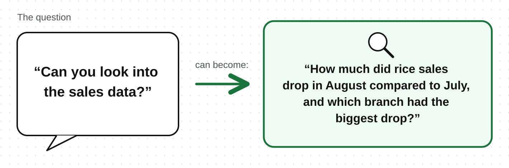

“Can you look into the sales data?” is a general request. It does not say what problem should be studied or what we want to know.
Good analysis starts with understanding the problem and asking clear questions before collecting data. This helps you avoid spending time on data that does not answer the real need.
A business problem is an issue a business or organization wants to understand, improve, or make a decision about. For example:
Sales are going down.
Many customers are leaving.
These describe the problem.
If you are doing analysis for a person or team, ask what they want to understand about the problem.
An analytical question is a clear question that data can help answer.

Specific -
it says what is being studied and what time period is being compared
Measurable -
data can answer it
Relevant -
it connects to the problem
Clear -
other people can understand it easily
The question above shows what data is needed: rice sales for the two months, separated by branch.
Problem: The number of students enrolling has dropped over the last three months.
Analytical questions:
In the last three months, which courses had fewer enrollments compared to the three months before?
Did fewer people ask about the courses, or did fewer interested people finish enrollment?
To answer this, the centre needs the number of people who asked about courses and the number of people who enrolled, grouped by month and course.
If you are making a report, dashboard, or model, start with:
Understand the problem
→Ask a clear question.